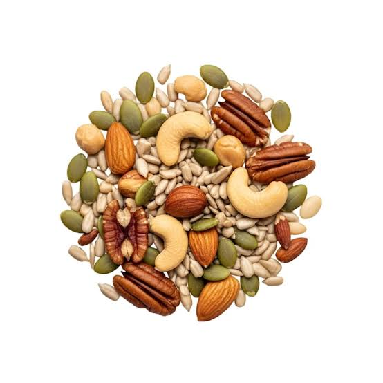
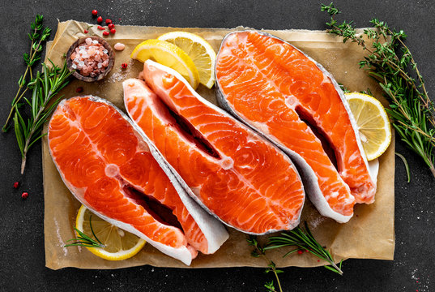

Bơ và dầu thực vật
Quả bơ và các loại dầu thực vật như dầu ô liu cung cấp chất béo không bão hòa.
BASIC NUTRITION
Tìm hiểu về chất béo lành mạnh, vai trò của chất béo và các nguồn thực phẩm cung cấp chất béo.
Chất béo là một chất dinh dưỡng cần thiết cho cơ thể, cung cấp năng lượng và hỗ trợ nhiều chức năng quan trọng.
HEALTHY FATS
Chất béo có thể được cung cấp từ nhiều loại thực phẩm khác nhau.
Quả bơ và các loại dầu thực vật như dầu ô liu cung cấp chất béo không bão hòa.

Các loại hạt như hạnh nhân, óc chó và hạt chia cung cấp chất béo cùng nhiều chất dinh dưỡng khác.

Các loại cá béo như cá hồi và cá thu cung cấp chất béo omega-3.